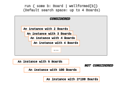
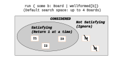

Anticipated Questions: Static Models¶
What Happens When Forge Searches?¶
Our first run command in Forge was from tic-tac-toe: run { some b: Board | wellformed[b]}.
How did Forge actually run the search? Surely it isn't checking all possible boards one at a time; that wouldn't scale at all, and we need to scale in order to model and reason about real systems. No; Forge can efficiently search much larger problem spaces than this.
Let's step through how Forge solves a problem. First, there's a space of potential solutions that it considers. Using the default engine, this space is finite—although possibly enormous. There are \(3^9 = 19683\) 3-by-3 tic-tac-toe boards, which isn't too bad. But a 4-by-4 board would have \(3^{16} = 430,467,213\) possibilities, and real systems might have more possible states than electrons in the observable universe. So we'd better be doing something smarter than checking one instance at a time.
The bounds of the space to search is set by the run command. In this case, no bounds were given, so defaults were used: instances may contain up to 4 atoms of each top-level sig type, and the integers \(-8\) through \(7\) (inclusive) but no more. We can adjust that bound by adding instructions, e.g., run { some b: Board | wellformed[b]} for exactly 2 Board will only seek instances where there are 2 Board atoms.
The bounds describe the search space. This space is populated with instances, some of which satisfy the constraints being run and some of which don't. In principle, there exist other instances too—entirely outside the space being searched! E.g., if we said to search up to 4 Board atoms, an instance with 100 such atoms might (or might not) satisfy our constraints, but wouldn't be considered in the search:

Once this space is defined, and only then, a sophisticated constraint-solving engine—a boolean "SAT" or "SMT" solver—takes charge. The engine uses techniques like backtracking and heuristics to try to avoid unnecessary work in solving the problem. This divides the search space into "satisfying" and "not satisfying" areas. The solver returns the satisfying instances in some order:

CSCI 1710
If you're in CSCI 1710, one of your assignments will be to build such a constraint solver, and even to see how it performs "plugged in" to Forge and solving real run commands you write.
Performance Implications¶
As you may have seen in the ripple-carry adder section, these two phases of solving work very differently, and letting the solver infer constraints is often less efficient than giving it tighter bounds, because the latter restricts the overall space to be searched beforehand. Some optimization techniques in Forge need to be explicitly applied in the first phase, because the solver engine itself splits the two phases apart. For more on this, read the upcoming Q&A section for traces and events.
"Nulls" in Forge¶
In Forge, there is a special value called none. It's analogous (but not exactly the same!) to a None in languages like Python.
Suppose I add this predicate to our run command in the tic-tac-toe model:
pred myIdea {
-- no 2 locations can share the same mark
all rowA, colA, rowB, colB: Int |
(rowA != rowB or colA != colB) implies
Board.board[rowA][colA] !=
Board.board[rowB][colB]
}
I'm trying to express that every entry in the board is different. This should easily be true about, e.g., the initial board, as there are no pieces there at all. But do you think the empty board satisfies this predicate?
Think (or try it in Forge) then click!
It's very likely this predicate would not be satisfied by the empty board. Why?
Because none equals itself, and it's the value in each location of the board before X or O move there.
Thus, when you're writing constraints like the above, you need to watch out for none: the value for every cell in the initial board is equal to the value for every other cell!
Reachability and none
The none value in Forge has at least one more subtlety: none is "reachable" from everything if you're using the built-in reachable helper predicate. That has an impact even if we don't use none explicitly. If I write something like: reachable[p.spouse, Nim, parent1, parent2] I'm asking whether, for some person p, their spouse is an ancestor of Nim. If p doesn't have a spouse, then p.spouse is none, and so this predicate would yield true for p.
This is why it's often advisible to qualify your use of reachable. E.g., I could write some p.spouse and reachable[p.spouse, Nim, parent1, parent2].
Some as a Quantifier Versus Some as a Multiplicity¶
The keyword some is used in 2 different ways in Forge:
- it's a quantifier, as in
some b: Board, p: Player | winner[s, p], which says that somebody has won in some board (and gives us a name for that board, and also for the winner); and - it's a multiplicity operator, as in
some Board.board[1][1], which says only that the middle cell of the board is populated (recall that the board indexes are0,1, and2).
Don't be afraid to use both; they're both quite useful! But remember the difference.
Guarding Quantifiers; Implies vs. "Such That"¶
You can read some row : Int | ... as "There exists some integer row such that ...". The transliteration isn't quite as nice for all; it's better to read all row : Int | ... as "In all integer rows, it holds that ...".
If you want to further restrict the values used in an all, you'd use implies. But if you want to add additional requirements for a some, you'd use and. Here are 2 examples:
- All: "Everybody who has a
parent1doesn't also have that person as theirparent2":all p: Person | some p.parent1 implies p.parent1 != p.parent2. - Some: "There exists someone who has a
parent1and aspouse":some p: Person | some p.parent1 and some p.spouse.
Technical aside: The type designation on the variable can be interpreted as having a character similar to these add-ons: and (for some) and implies (for all). E.g., "there exists some row such that row is an integer and ...", or "In all rows, if row is an integer, it holds that...".
There Exists some Atom vs. Some Instance¶
Forge searches for instances that satisfy the constraints you give it. Every run in Forge is about satisfiability; answering the question "Does there exist an instance, such that...".
Crucially, you cannot write a Forge constraint that quantifies over instances themselves. You can ask Forge "does there exist an instance such that...", which is pretty flexible on its own. E.g., if you want to check that something holds of all instances, you can ask Forge to find counterexamples. This exactly what assert ... is necessary for ... does; it searches for counterexample instances.
Tip: Testing Predicate Equivalence¶
Checking whether or not two predicates are equivalent is the core of quite a few Forge applications---and a great debugging technique sometimes. (We saw this very briefly for binary trees, but it's worth repeating.)
How do you check for predicate equivalence? Well, suppose we tried to write a predicate in two different ways, like this:
pred myPred1 {
some i1, i2: Int | i1 = i2
}
pred myPred2 {
not all ii, i2: Int | i1 != i2
}
assert myPred1 is necessary for myPred2
assert myPred2 is necessary for myPred1
These assert statements will pass, because the two predicates are logically equivalent. But if we had written (forgetting the not):
One of the assertions would fail, yielding an instance in Sterling you could use the evaluator with. If you get an instance where the two predicates aren't equivalent, you can use the Sterling evaluator to find out why. Try different subexpressions, discover which is producing an unexpected result!
One Versus Some¶
Classical logic provides the some and all quantifiers, but Forge also gives you no, one and lone. The no quantifier is fairly straightforward: if I write no row, col: Int | Board.board[row][col] = X, it's equivalent to all row, col: Int | Board.board[row][col] != X. That is, X hasn't yet put a mark on the board.
The one quantifier is for saying "there exists a UNIQUE ...". As a result, there are hidden constraints embedded into its use. one row: Int | Board.board[row][0] = X really means, roughly, some row: Int | { Board.board[row][0] = X and all row2: Int | { row2 != row implies Board.board[row][0] != X}}: there is some row where X has moved in the first column, but only one such row. The lone quantifier is similar, except that instead of saying "exactly one", it says "either one or none".
This means that interleaving one or lone with other quantifiers can be subtle. Consider what happens if I write one row, col: Int | Board.board[row][col] = X. This means that there is exactly one square on the board where X has moved. But what about one row: Int | one col: Int | Board.board[row][col] = X?
Exercise: Test this out using Forge! Try running:
run { not {
(one row, col: Int | Board.board[row][col] = X) iff
(one row: Int | one col: Int | Board.board[row][col] = X)
}}
Think, then click!
The problem is that one row, col: Int | ... says that there exists one unique pair of indexes, but one row: Int | one col: Int | ... says that there exists one unique index such that there exists one unique index... These are not the same.
Because thinking through one and lone quantifiers can be subtle, we strongly suggest not using them except for very simple constraints. (Using them as a multiplicity, like saying one Tim.office is fine.)
Satisfiability Testing and a Pitfall¶
The test expect syntax lets you check for satisfiability directly. This is quite powerful, and lets us illustrate a fairly common mistake. Here is a test block with 2 tests in it. Both of them may look like they are comparing myPred1 and myPred2 for equivalence:
test expect {
-- correct: "no counterexample exists"
-- Forge tries to find an instance where myPred1 and myPred2 disagree
p1eqp2_A: {
not (myPred1 iff myPred2)
} is unsat
-- incorrect: "it's possible to satisfy what i think always holds"
-- Forge tries to find an instance where myPred1 and myPred2 happen to agree
p1eqp2_B: {
myPred1 iff myPred2
} is sat
}
These two tests do not express the same thing! One asks Forge to find an instance where the predicates are not equivalent. If it can find such an instance, we know the predicates are not equivalent, and can see why by viewing the intance. The other test asks Forge to find an arbitrary instance where they are equivalent. But that needn't be true in all instances, just the one that Forge finds.
Quantifiers and Performance¶
Forge works by converting your model into a boolean satisfiability problem. That is, it builds a boolean circuit where inputs making the circuit true satisfy your model. But boolean circuits don't have a notion of quantifiers, so they need to be compiled out.
The compiler has a lot of clever tricks to make this fast, but if it can't apply those tricks, it uses a basic idea: an all is just a big and, and a some is just a big or. This very simple conversion process increases the size of the circuit exponentially in the depth of quantification.
Let's look at an example of why this matters. Here is a reasonable way to approach writing a predicate for a model solving the 8-queens problem, where Forge is searching for how to place 8 queens on a chessboard such that none of them can attack the other:
pred notAttacking {
-- For every pair of queens
all disj q1, q2 : Queen | {
-- There's somewhere to put them: (r1,c1) and (r2,c2)
some r1, c1, r2, c2: Int | {
// ... such that (r1,c1) and (r2,c2) aren't on a shared line of attack
} } }
The problem is: there are 8 queens, and 16 integers. It turns out this is a pathological case for the compiler, and it runs for a really long time. In fact, it runs for a long time even if we reduce the scope to 4 queens! The default verbosity option shows the blowup here, in `time-ranslation, which gives the number of milliseconds used to convert the model to a boolean circuit:
:stats ((size-variables 410425) (size-clauses 617523) (size-primary 1028) (time-translation 18770) (time-solving 184) (time-building 40)) :metadata ())
#vars: (size-variables 410425); #primary: (size-primary 1028); #clauses: (size-clauses 617523)
Transl (ms): (time-translation 18770); Solving (ms): (time-solving 184)
Ouch! To avoid this blowup, we might try a different approach that uses fewer quantifiers. In fact, *we can write the constraint without referring to specific queens at all, just 4 integers representing the positions.
How?
Does the identity of the queens matter at all, beyond their location?
If you encounter bad performance from Forge, check for this sort of unnecessary nested quantifier use. It can often be fixed by reducing quantifier nesting, or by narrowing the scope of what's being quantified over.